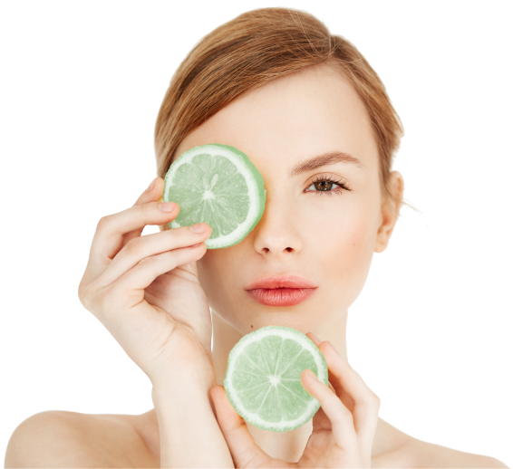

<section class="section-why why  _section">
	@@include('_section-title.html',{
	"title":"Почему мы?",
	"div": ""
	})
	<div class="container">
		<div class="row">
			<div class="why-info">
				<div class="why-info__text">
					<p><b>Квалифицированный персонал, прогрессивные и эффективные процедуры</b>, удачно сочетает в своей
						работе наш салон. Наши специалисты помогут вам выбрать лечебный и профилактический комплекс процедур,
						после того, как будет проведена диагностика кожи. При этом разрабатывается программа <b> в
							соответствии с типом вашей кожи</b> и подбираются косметические средства, которые обеспечат
						<b>максимальный эффект</b> .
					</p>

					<p>Все процедуры, которые предоставляет наш салон, соответствуют <b>европейским стандартам и нормам</b>, являются абсолютно <b>безопасными</b>, при этом используемые косметические средства созданы и рассчитаны даже на чувствительную и склонную к аллергии кожу</p>
				</div>
				<button class="btn btnAn-1">
					Записаться
				</button>
			</div>
			<div class="why-img">
				<div class="why-imgbox">
					
				</div>
			</div>
			
		</div>
		<!-- /.row -->
	</div>
	<!-- /.container -->
</section>
<!-- /.section-why -->